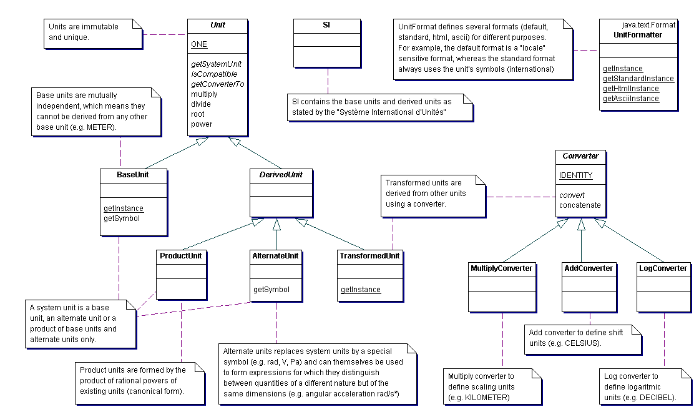

|
JADE v6.0 | |||||||||
| PREV PACKAGE NEXT PACKAGE | FRAMES NO FRAMES | |||||||||
See:
Description
| Class Summary | |
| AddConverter | This class represents an add converter. |
| AlternateUnit | This class represents an alternate unit. |
| BaseUnit | This class represents the building blocks on top of which all others units are created. |
| Converter | This class represents a converter of numeric values. |
| DerivedUnit | This abstract class identifies derived units. |
| MultiplyConverter | This class represents a multiply converter. |
| NonSI | This class contains units that are not part of the International System of Units, that is, they are outside the SI, but are important and widely used. |
| ProductUnit | This class represents a product unit. |
| ProductUnit.Element | Inner product element represents a rational power of a single unit. |
| SI | This class contains SI (Système International d'Unités) base units, and derived units. |
| TransformedUnit | This class represents a unit derived from another unit using
a Converter. |
| Unit | This class represents a unit of physical quantity. |
| UnitFormat | This is the abstract base class for all unit formats. |
| Exception Summary | |
| ConversionException | Signals that a problem of some sort has occurred either when creating a converter between two units or during the conversion itself. |
Provides support for programatic unit handling (in conformance with the units specification currently being defined under JSR-108).

|
JADE v6.0 | |||||||||
| PREV PACKAGE NEXT PACKAGE | FRAMES NO FRAMES | |||||||||